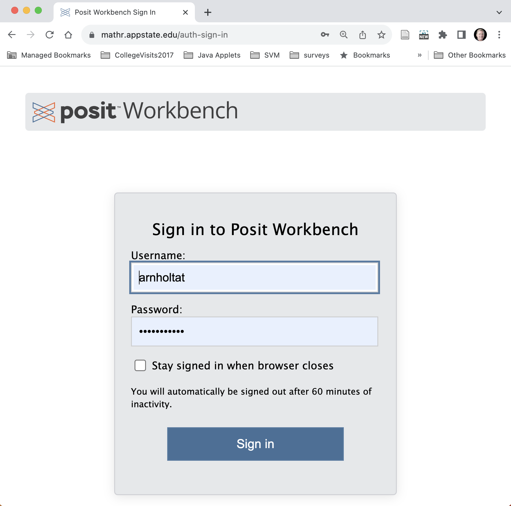

STT 3860 - Introduction to Statistical Modeling - Spring 2025
Instructor Information
Instructor: Dr. Alan T. Arnholt
Office: Walker Hall 237
Student Help Hours: 12:30-2:00 pm T & R, 2:00-3:00 pm W, and by appointment.
- Make an appointment to see me by clicking here.
Course Description
Introduction to Statistical Modeling: Introduction to Statistical Modeling is a continuation of Introduction to Data Management and Visualization with an emphasis on statistical modeling and reproducible reporting using professional tools. Hypothesis testing is introduced via resampling, and bootstrapping is used to introduce estimation. Cross-validation is used to evaluate and select models that take into account the bias-variance trade-off. Supervised learning techniques discussed will include but are not limited to linear regression, regression trees, classification trees, and random forests.
Course Objectives
Students will learn to use a reproducible work flow for all assignments.
Students will improve their technology expertise.
Students will learn to create statistical models using supervised learning techniques.
Students will learn to assess models via cross-validation.
Students will learn the fundamental ideas of tidy modeling including recipes and workflows.
Course Texts
Tidy Modeling with
R: A Framework for Modeling in the Tidyverse by Max Kuhn and Julia SilgeFeature Engineering and Selection: A Practical Approach for Predictive Models by Max Kuhn and Kjell Johnson
An Introduction to Statistical Learning with Applications in
Rby Gareth James, Daniela Witten, Trevor Hastie and Robert TibshiraniThe Elements of Statistical Learning by Trevor Hastie, Robert Tibshirani, and Jerome Friedman
Rfor Data Science (2e) by Hadley Wickam, Mine Centinkaya-Rundel, and Garrett GrolemundRGraphics Cookbook by Winston Chang - Available viaSafariBooksOnlinethrough the Appalachian State University library.
Tentative Schedule and Course Pacing Guide
Tentative course assignments and due dates are maintained here.
Course Grading & Assessment
20% of the course grade will come from sixteen DataCamp chapters.
40% of the course grade will come from four Quarto reproductions of Data Camp courses.
40% of the course grade will come from two group presentations.
University Policies
This course conforms with all Appalachian State University policies with respect to face coverings, academic integrity, disability services, class attendance, and student engagement. The details of the policies may be found at https://academicaffairs.appstate.edu/resources/syllabi-policy-and-statement-information. Please pay particular attention to the student engagement statement.
Computers and Software
This course will use the RStudio/POSIT workbench server (https://mathr.appstate.edu/) that has the programs listed below and more installed.
You must have an active internet connection and be registered in the course to access the server. To access the server, point any web browser to https://mathr.appstate.edu/. Use your Appstate Username and Password to access the server. A screen shot of the POSIT workbench login screen is shown below.
If you have problems with your Appstate Username or Password visit IT Support Services or call 262-6266.
Required Technology
Technology used in this class is free
Note: All technology used in the class is either open source (free) or will be accessible to students enrolled in the course for no cost.
Course Pacing Guide/Assignments
The Course Pacing Guide has all course assignments and due dates.
Faculty and Student Responsibilities
It is my (faculty) responsibility to explain and present the material you need to master for this course. A detailed description of everything you need to do starting with day one to the Final Exam is provided in the course pacing guide which is available on day one of the course.
It is your (student) responsibility to learn the material and to seek help if you do not understand the material.
Appalachian students are expected to make intensive engagement with courses their first priority. Practically speaking, students should spend approximately 2-3 hours on coursework outside of class for every hour they spend in class. For this three-hour course, you you should anticipate 6-9 hours per week of outside work.
How To Do Well In This Course
The only way to learn statistics is to DO statistics, which includes using statistical software. Reading the textbook, learning the language, and practicing exercises using real data are critical to your learning and success. Class activities and assessments have been structured with these principles in mind. You should read assigned textbook content and read/watch supplemental materials prior to coming to class. When you read the assigned material, you should complete the problems (not just read about them) on your paper and computer. It will be easier to participate if you acquire some familiarity with the vocabulary and methods before we start to discuss and use them. You must “speak the language” (both statistics and R) to demonstrate your knowledge effectively. If you come to class and have difficulty following the discussion, you should make sure you have read all of the assigned material and then go back and re-read the assigned material a second time. Reading a technical book is not the same as a novel. Most people, your instructor included, must read a technical section at least twice before understanding a topic. If you are still having challenges after reading the assigned material twice and working the out the material on paper and the computer, it is your responsibility to seek help. I am here to help and will be glad to assist you in your learning process. Please make an appointment to visit with me on my calendar.
How To Get Unstuck
Well constructed questions will elicit answers more rapidly than poorly constructed questions. This video provides some background on asking questions. This stackoverflow thread details how to create a minimal R reproducible example. Please read How To Ask Questions The Smart Way by Eric Raymond and Rick Moen and heed their advice.